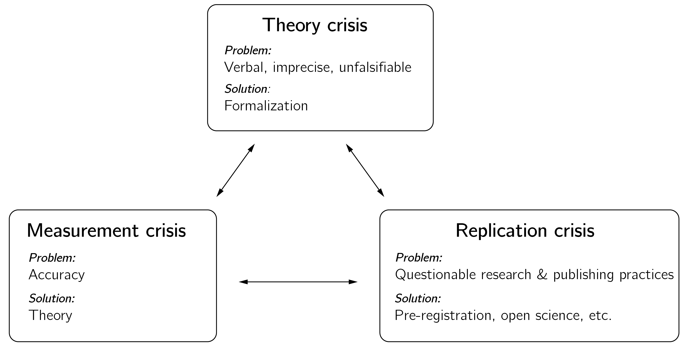

8 エピローグ
本書を書くにあたり、私には三つの主たる目標があった。すなわち、心理学と社会科学における応用に特に重点を置いた複雑系研究の包括的な概観を提供すること、複雑系研究のための技能を教えること、そして心理学における複雑系の潜在的な応用について批判的に考えることを促すことである。私はまず各章の主な要点を簡単に論じ、それから心理学への複雑系アプローチの評価に焦点を当てる。
sec-ch1 で、私は複雑系を定義した。複雑系は相互作用する下位システムから構成され、より低いレベルでは見られない創発的な振る舞いをもたらす。これらの創発的なパターンはしばしば自己組織化を通じて生じ、突然変化しうるし、カオス的な振る舞いを示すこともあり、予測を難しくする。それらは、非線形力学系理論、エージェントベースモデリング、そしてネットワーク理論に由来するものといった、さまざまな方法を用いて研究できる。
私は、科学的分野としての心理学の独立性と自律性を論じた。これは、心理システムで作動するメカニズムや原理が、他の科学におけるものと必ずしも異なる、ということを意味しない。 レーザービームにおける原子の同期は、うつ状態の患者における症状の揃いや、燃える建物を避難する人々の同期した運動と、それほど変わらないかもしれない。あらゆる科学における複雑系は、ほとんど常に、予測不可能な現象が生じうるネットワークである。これらは、原子、ニューロン、症状、車、人々、あるいは国全体のネットワークでありうる。これらの動的なネットワークには、通常、限られた数の組織化されたパターンないし安定状態しかない。制御変数を操作すると分岐がもたらされ、それは限られた数の形をとりうる。私たちはこれらの原理を何度も何度も見てきた。
ある記述レベルにおける創発的な性質は常に、より低いレベルの出来事として説明ないし書き換えられうると論じることもできるが、これは大部分無関係である。心理学では、少なくとも三つの基本的な記述レベル、すなわち脳、心、そして社会的世界に関係するレベルを区別しなければならない。心を記述する際、ニューロンのレベルより深く掘り下げても追加の洞察は得られない。1 そして陰謀論の広がりをモデル化する際、ニューロンの軸索が成長する仕方は方程式から除いてよい。
私は、心理学における複雑系科学の応用について、ほどほどに楽観的でありうる理由で締めくくった。第一に、複雑系はしばしばその説明的価値を失うことなく単純化できる。第二に、これらのシステムは限られた数の平衡状態によって記述できる。第三に、複雑系をモデル化するためにネットワーク科学を用いることができる。
sec-ch2 で、私はカオス理論と、固定点、リミットサイクル、分岐、そして力学系モデルといった、複雑系の鍵となる概念の多くを紹介した。決定論的カオスについて学ぶことは私の世界観を、そしてまた数学における美への私の理解を変えた。私は両方を伝えることに成功したと願っている。
私にはしばしば、心理学者がどういうわけか、数百万の個人から極めて正確な生活史、環境、遺伝、生物学、そして神経心理学の時系列データを膨大に集められ——現在は達成不可能な偉業だが——それを、多数の高次の交互作用をもつ洗練された非線形の多水準回帰モデルに投入できれば、実質的に何でも予測できると信じているように思われる。これは単に誤りである。それは決定論的カオスのためだけでなく、sec-The-Polya-Urn-model-of-the-third-source で論じたエピジェネティックな過程（第三の源）の影響のためでもある。ポリアの壺モデルは、システムの初期条件とダイナミクスの完璧な知識でさえ、個々の発達の結果を予測するのに不十分である理由の、非常に単純な実演を提供する。
心理学におけるカオス理論の応用は、精神生理学的データの分析に限られる。仮説は、脳がカオスの縁で最もよく機能する、というものである（sec-The-brain も参照）。過去四十年に数百の論文が書かれたにもかかわらず、私はこの仮説の証拠は決定的でないと言いたい。このアプローチには非常に高品質のデータと高度な統計的アプローチが必要であり、それらは取得が難しく開発も難題である。さらに、複雑性を研究する際のカオス理論の適用可能性そのものを疑問視する懐疑論者すらいることに言及する価値がある (Anderson 1999)。
sec-ch3 は、転移、すなわち時に呼ばれるように転換点に充てられた。私にとってこれは複雑系理論における非常に実践的な概念である。私はおそらくいくぶん偏っているが、幅広い心理過程にわたって転換点の実例を見て取る。私が論じなかったものをほんの少し挙げる。すなわち、突然の洞察、創造的な飛躍、攻撃的行為、思春期の始まり、気分の変動、語彙の急増、そして退学である。これらすべての場合に、sec-ch3 で示したモデリングと経験的なプログラムが実り多いかもしれない。この章はまた分岐とカタストロフィの数学の初歩的な導入を含んでいた。鍵となる形式的概念の基本的な理解は必要であり達成可能だと思う。私はさらなる研究のための資料を提供した。これらの概念を依然として難しいと感じる人には、sec-ch4n のカスプ・カタストロフィの例を実行し研究することも勧める。私はまた、カタストロフィ・フラグとコブの統計的アプローチを用いてカタストロフィモデルを経験的に評価する方法論を概説した。
sec-ch4n で、私は力学系モデルの構築に焦点を当てた。私は、生物学と心理学における幅広い力学系モデルを実装するための道具として Grind を紹介した。このモデリングのアプローチは、（数値的な分岐解析を用いて）依然として完全に理解できる、よりメカニズム的なモデルを構築することを可能にする。私は心理学における力学系モデリングの代表的な概観を与えようとしたが、文献には他の多くのモデルが容易に見つかるだろう。そのような場合、私は常にモデルを自分で実装することを勧める。ほとんどの場合、Grind で用が足りる。再現は良い科学の鍵であり、その過程で多くを学べる。
私は生態系モデルの評価をいくぶん詳しく論じた（sec-Evaluation-of-ecological-modelling）。単純なモデルでさえ多数の仮定を含意し、その多くは暗黙的になされる（ロトカ–ヴォルテラモデルの基礎にある仮定を例として）ことに注意した。また、モデルの選択における一見些細な変化が、モデルの質的な振る舞いに莫大な影響をもちうる。同じ章で述べたように、私は言語的モデルを形式化する過程を魅力的だと思う。それは非常に混乱を招く傾向がある。突然、仮定が何なのか、本当に提案されているメカニズムが何なのか、時間スケールが何なのか、あるいは説明すべき現象が本当は何なのかさえ不明になる。
モデルは通常いくつものメカニズムを組み合わせ、私は数学的なモデルの部品を他のモデルで再利用することを強く勧めた。類推によるモデリングは非常に生産的でありうる (Haig 2005)。最後に、モデル化する際、常にデータへの結び付きを念頭に置くことが決定的に重要である。私は因果ループ図のアプローチについてこれを特に懸念している。内容の専門家との会合で構築されたモデルは、多くの箱とリンクをもって大きくなる傾向がある。これらの箱の各々についてすべての測定の時系列が利用可能であれば問題ではないかもしれないが、これはめったにない。私は単純に始め、最も些細なモデルでは確立されたいくつかの現象が説明できないときにのみ変数と方程式を加えることを好む。
第 sec-ch2、sec-ch3、sec-ch4n 章で、私は少数の変数をもつシステムに焦点を当てた。本書のこの部分は、しばしば非線形力学系理論と呼ばれるものを扱う。私は非線形力学系の理論を複雑系アプローチの基本的な構成要素とみなしている。本書の第二の部分は、多数の変数をもつシステムを扱う。
自己組織化は sec-ch5n の主題であった。私はこの章を、複雑系の研究における主要な理論、たとえばシナジェティクスに関するハーケンの仕事や、不可逆的転移と熱力学第二法則に関するプリゴジンの考えを紹介するためにも用いた。自然界に見出される自己組織化の過程、そしてライフゲームのような一見単純なシステムの予想外の力に対する私自身の畏敬と驚きの感覚を、うまく伝えられたと願っている。NetLogo のシミュレーションに取り組むことで、いくぶん抽象的な自己組織化という概念がより理解しやすくなったと信じる。一例として、寄生者の豊富な成長を防いだハイパーサイクルの空間モデルにおける螺旋波を挙げる。この強い創発の例は、シミュレーションを実行し基本的な NetLogo コードを研究することで容易に理解できる。
本書を書きながら、自己組織化する複雑系の概念が初期の心理学にすでに存在していたことを改めて認識した。私はゲシュタルト心理学とピアジェの理論を例として挙げたが、ロジャーズの自己概念の理論、ハイダーの均衡理論、あるいはギブソンの知覚の生態学的理論についても同じ点を指摘できるだろう。 これが、私が心理学における複雑系アプローチを、新規な理論としてよりも、これらの興味深いが抽象的な言語的理論の形式化としてより多く捉える理由である。たとえば、イジング態度モデルは社会心理学における数多くの確立された概念を形式化する。
sec-ch6 は心理学的および心理測定学的なネットワークアプローチに焦点を当てた。この章は、この人気のある研究の系譜が直面する課題の拡張された議論で終わる。私自身の貢献は主に理論的なものである。心理学的特性についての共通原因の見方への代替物を提供することは重要だと思う。共通原因に介入できないこと、あるいはそれが説明する観察可能な要因に頼ることなくこれらの固定された生物学的要因の知識を得ることさえできないことは、恵まれない人々をその運命に見捨てるために容易に悪用されうる、意気消沈させる心理学的理論をもたらす (Heckman 1995)。
モデリングという点では、態度への応用が最も成功していると私は考える。イジング態度モデルは、初期のコネクショニストネットワークモデルに立脚するだけでなく、改良も組み込んでいる。イジングモデルのダイナミクスは数学的な観点からよりよく理解され、温度パラメータの新規な心理学的解釈を提供し、そしてデータに効果的に当てはめられる。このモデルは、不協和や単なる思考効果といった社会心理学の鍵となる概念を形式化しつつ、潜在的態度測定と明示的態度測定の間の違いへの新たな説明を示唆する。 このモデルの平均場近似を HIOM で用いることは、社会物理学における革新的な発展を表す。私はネットワーク心理学とネットワーク心理測定学の両方で、さらに多くの革新を予期している。
最終章 sec-ch7 で、私たちは社会的世界の領域に移った。心理学者は計算社会科学、社会物理学、そしてエージェントベースモデリングといった分野になじみがないことが多いので、私はこの急速に発展する分野の簡潔な概観を提供することを目指した。単純化における適切な均衡を見出すことは一つの課題であることが判明した。単純な投票者モデルは解析的な扱いやすさを提供するが、その意義は主に理論的である。より現実的なモデルは、シミュレーションの助けを借りても、すぐに扱いにくくなる。
私はエージェントの心理学的な現実性を改善することに焦点を当てた。私のアプローチは、三つの記述レベルを結び付けることを含む。すなわち、態度要素の相互作用、カスプとしての態度の平均場表現、そしてカスプのようなエージェントが社会ネットワーク内で相互作用する HIOM である。私の知る限り、この三レベルの統合は独自である。 心理学と社会科学における多くの複雑モデルと同様、注目すべき弱点はデータへの結び付き、とりわけモデルを本当に区別するデータへの結び付きである。
もっと引いて見よう。今や、あなたは決定論的カオス、カタストロフィ、そして自己組織化という概念を含め、複雑系が何を含むかについてしっかりとした理解をもっているはずである。私はこれらの考えを、心理学を含むさまざまな科学分野からの数多くの例で例示した。自分自身のモデルを構築し始めるとき、既存のモデルや枠組みを知っておくことは極めて重要である。これが私の第一の目標であった。
第二に、私はモデリングの技能の重要性に大きな重点を置いた。私にとって、理解への一つの決定的な道はシミュレーションにある。私の演習に取り組むことで培った技能が、心理学における形式的モデリングへのあなたの取り組みを促すことを願っている。
私の第三の目的は、心理学における複雑系の研究に対する、そしてより大きな文脈では心理学と科学そのものの領域内での、批判的なアプローチを促すことであった。これは自然に、この試みについての私個人の立場という問いに至る。告白しなければならないが、私は複雑な思いを抱いている。
約二十年前、就任講演で、私はカスプのポテンシャル関数の二つの極小の間の不安定な極大に自分を描いた。態度対象は私たちの心理学という分野であり、極小は肯定的（「愛」）と否定的（「憎しみ」）の評価を表した。私は明らかにこの問題に深く関与しているので、私はカスプの前方にいる。これは、もちろん態度のカスプモデルが正しいと仮定して、この中間の状態が非常に不安定であることを意味する。
したがって、私自身の仕事を含め、私たちの分野を焼き払ってほしいと私に頼むなら、あなたは正しい場所に来た。手短に言えば、私たちには再現性の危機があり (Aarts et al. 2015; Nosek et al. 2022; Pashler and Wagenmakers 2012)、理論の危機があり (Eronen and Bringmann 2021; Oberauer and Lewandowsky 2019)、そして測定の危機がある (Franz 2022; Lumsden 1976; Michell 1999)。いくつの危機をもてるというのか。
これらの危機の各々は、一見したよりも深刻である。 長い間、疑わしい研究慣行、\(p\) ハッキング、選択的な報告、研究のつまみ食い、探索的な結果を確認的な結果として提示することなど、ほんの数例を挙げるだけでも、そういったものが研究を支配していた。これらすべてが 2011 年以来急進的に変わった。驚くべきことに、私自身の国での不正事件2 が、このオープンサイエンス、事前登録、データ共有への転換に大きな役割を果たした。おそらく私たちは準安定状態にあり、そのような摂動が一つ必要だっただけなのだ。私たちはいまだにこの変容の只中にあり、あまり早く祝うべきではない (Chambers 2017)。しかし、それは革命である！
次に理論の危機。基準（弱いか強いか）に応じて、心理学者は数百万の理論をもつか、まったくもたないかのいずれかである。その中間にはあまりない。多くの最近の論文が、理論の危機からの出口として形式化を提案してきた (Oberauer and Lewandowsky 2019; Borsboom et al. 2021; Rooij and Blokpoel 2020)。本書はその視点から書かれている。それが貢献をなすことを願っているが、自然科学における形式的モデルの科学的基盤と、私たちのささやかな試みの間の違いはよく認識している。私にとって、それはすべて適切な度合いの単純化に関わる。複雑系をモデル化する際、私たちはほとんど常に少なくとも二つのレベル、すなわち微視的なレベルと巨視的なレベルを定義する。巨視的なレベルにおける創発現象は、微視的な相互作用から生じる。神経活動からより高次の推論への一歩は、あまりに大きすぎるように思われる（もっとも、大規模言語モデルの驚くべき成功に照らして、これを考え直す必要があるかもしれないが）。
本書を書きながら、現象論的モデリングとメカニズム的モデリングの区別が、私が思っていたほど離散的でないことを学んだ。第一に、私たちはいくつかの現象論的なカタストロフィモデルに基盤を提供できた。態度のカスプモデルは、態度ネットワークについてのいくつかの単純な仮定に基づく態度のイジングモデルから導ける。第二に、多くの生物学的モデルは現象論的な要素とメカニズム的な要素を組み合わせる。ある種の項はよく論じられているかもしれないし、他のものは単に実用的に選ばれているかもしれない（たとえばホリングのタイプ）。とはいえ、これらのモデルを研究することが非常に有益であることを示せたと願っている。私の仕事では、類推によるモデリングが中心的な役割を果たす。
私は測定の危機を最も深刻な問題とみなしている。電子の磁気モーメントの大きさを計算する精度が、ロサンゼルスからニューヨークまでの3,000マイルを超える距離を、人間の髪の毛一本の幅の精度で測定することに相当するという、リチャード・ファインマンの主張を思い出そう。そしてそれは 1985 年のことだった！ 私は心理学的測定の専門家であり、心理学的測定の新たな方法について多くの論文を発表してきた。私たちがこの驚くべき水準の定量化と精度には遠く及ばない、と言える。私たちは足し算ができないのだ！
足し算は定量化のリトマス試験である (Michell 1997)。重さや距離のような真の量は足せる。1キログラム + 1キログラム = 2キログラムであり、これは1キログラムの2倍である。3 私たちは、IQ、人格検査の得点、あるいは態度項目へのリッカート得点について、そのようなことを言えない。私はこれが望みのない試みだとは思わない。物理学者ですら、鍵となる概念が曖昧に理解され、貧弱に測定された時代を経てきた（Chang (2008) の『温度を発明する（Inventing Temperature）』を参照）。私はまた、「物理学のあらゆる法則は、極限まで押し進めれば、数学的に完璧で精確なのではなく、統計的で近似的であることが判明するだろう」(Wheeler 1994) といった言明からも希望を引き出す。
現在、私たちの測定の尺度は順序尺度と間隔尺度の間のどこかにある。おそらく改善への連続的な道がある。しかし今のところ、私たちはかなり弱い測定の尺度とともに生きなければならない。これは心理学的理論を形式化する私たちの試みに含意をもつ。私たちが順序的なデータや半間隔的なデータしかもたないとき、方程式におけるある種の項の正確な形は無関係である。モデルを検証する際、その質的な振る舞いに焦点を当てるべきである。これはまさに sec-ch3 でカタストロフィ・フラグを用いて行ったことであり、時に批判されるカタストロフィ理論を私が支持する一つの理由である。
量的な予測のみに基づいてモデルを区別することについての期待を和らげることも重要である。質的な予測についての合意を達成することが、最も実行可能な結果かもしれない。前章で、私は分離の例を用いた。それは、個人が比較的寛容であっても、多くのモデルとその変種によって予測される。
私はこれらの危機を詳しく検討しようとはしないが、本書の路線に沿って、これらの危機が相利共生的なネットワークを形成する（figure fig-ch8-extra）と示唆したい。一つの危機を解決する進歩は、他の危機を解決することに正の影響をもつだろう。多くのよく知られた心理学的現象の経験的基盤により多くの確信をもてれば、理論の発展が恩恵を受ける。改善された理論は測定を進歩させるのに必要であり、その逆も然りである。素粒子物理学や生化学のような科学における急速な進歩の時期には、理論の発展と測定技法の上昇螺旋がしばしば見られる。

私たちは少なくとも一つのそのような急進的な変容の一部であり、それは今起こっている。すなわち AI 革命である。もちろん、計算機科学のような多くの分野が鍵となる役割を果たしてきたので、私たちがこの革命の所有権を主張することはできない。しかし、現在の進歩は、心理学者によって最初に研究されたメカニズム（神経学習とオペラント条件づけ）に基づいている。残念ながら、他に説得力のある例はない。私たちはまだ飛行機も冷蔵庫も発明していない。これは冗談ではない。科学において、技術こそが実証である。ある時点で、私たちは嗜癖やパニック障害のような問題を本当に解決しなければならない。
これらすべての否定的なことにもかかわらず、心理学は依然としてあらゆる科学の中で最も魅力的な科学である。sec-ch1 で強調したように、速い局所的な相互作用からの電気活動の大域的な波の創発が、私たちの意識的な思考過程の基盤を形成する。この現象は本当に驚くべきものであり、それを理解することは史上最も興味深い科学的課題の一つを提示する。 それは究極の複雑系を含み、私たちはそれを自分自身の心で探求している。心理学は反直観的な発見とパラドックスに満ちている。おそらく最大のパラドックスは、心理学が、他のどの科学とも異なり、それが研究するまさにその知性を用いながら、人間の知性の限界と誤りやすさを明らかにする、ということである。
心理学という分野は、しばしば誰か適当な人物の集合的な意見にすぎなかった壮大な理論から、下位過程やシステムのより詳細なモデルへと、絶えず離れつつある。より小さな規模で重要な進歩がなされてきた。同様に、複雑系アプローチは、現在、心理学のための壮大な理論を提供するのではなく、むしろモデリング、分析、そして理解のための多用途な道具の集合を提供する。私は、複雑な脳・心・社会的世界のシステムの包括的な全体的理論で締めくくることはできない。私は単にそれをもっておらず、断片しかもっていない。
本書が心理学研究における持続的な進歩に貢献することが私の願いである。他の分野における複雑系研究の概観は、おそらく役立つ。私はまた、新しい世代の研究者が多くの実践的で有用なモデリングの技能を学ぶことを願う。そして、心理学への憎しみと愛の間の不安定な極大を見つけられたことを願う。
実は、心理過程における量子過程の役割は、科学界で進行中の議論と研究の話題である。一部の研究者は、量子力学が認知過程に役割を果たすかもしれないと提案してきたが、この考えは広く受け入れられてはいない。一つの理論は、脳細胞内の微小管における量子過程が意識に結び付きうる、と示唆する (Hameroff and Penrose 1996)。他の研究者は、量子力学の確率的な性質が、古典的な確率論よりも人間の意思決定のより良いモデルを提供するかもしれない、と示唆してきた (Busemeyer and Bruza 2012)。しかし、この仕事は、量子物理的な過程が意思決定に関与している、と示唆するものではない。むしろ、それは認知過程をモデル化するための数学的な枠組みとして量子理論を用いている。↩︎
これは十分条件だが必要条件ではない。時に、二つの量の連結は重み付き平均を与える。たとえば、異なる温度の二つの液体を混ぜるときである。↩︎